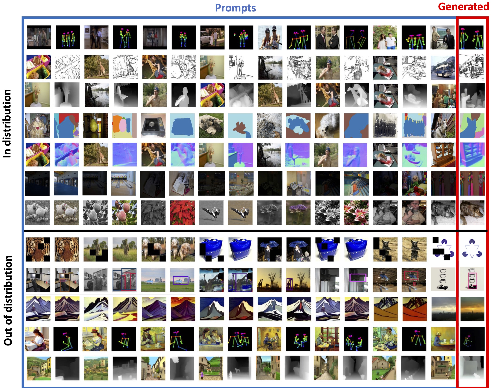
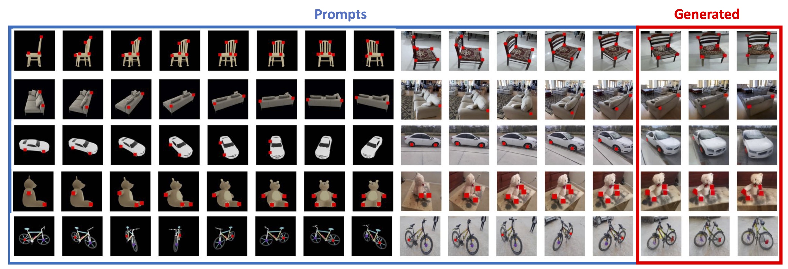

Abstract
Many Deep Neural Networks (DNNs) with diverse architectures and learning objectives have yielded high brain similarity and hierarchical correspondence to ventral stream responses to static images.
However, they have not been evaluated on dynamic social scenes, which are thought to be processed primarily in the recently proposed lateral visual stream. Here, we ask whether DNNs are similarly good
models of processing in the lateral stream and superior temporal sulcus as they are of the ventral stream. To investigate this, we employ large-scale deep neural network benchmarking against fMRI responses
to a curated dataset of 200 naturalistic social videos. We examine over 300 DNNs with diverse architectures, objectives, and training sets. Notably, we find a hierarchical correspondence between DNNs and lateral
stream responses: earlier DNN layers correlate better with earlier visual areas (including early visual cortex and middle temporal cortex), middle layers match best with mid-level regions (extrastriate body area
and lateral occipital cortex), and finally later layers in the most anterior regions (along the superior temporal sulcus). Pairwise permutation tests further confirm significant differences in average depth of the best
layer match between each region of interest. Interestingly, we find no systematic differences between diverse network types in terms of either hierarchical correspondence or absolute correlation with neural data,
suggesting drastically different network factors (like learning objective and training dataset) play little role in a network's representational match to the lateral stream. Finally, while the best DNNs provided a
representational match to ventral stream responses near the level of the noise ceiling, DNN correlations were significantly lower in all lateral stream regions. Together, these results provide evidence for a
feed-forward visual hierarchy in the lateral stream and underscore the need for further refinement in computational models to adeptly capture the nuances of dynamic, social visual processing.
Social Interaction Perception in the Brain
Figure 1: Lateral Stream and the Ventral Stream.
Methodological Overview
Figure 2: From left to right - Participants watch 3 sec naturalistic, social videos and collection of behavioral ratings of videos on predefined social interaction dimensions. Diverse range of DNN models and extraction of their feature activation in response to video stimuli (bottom). Next, these features are then structured into representational dissimilarity matrices (RDMs) by computing pairwise Pearson correlation distances across all pairs of stimuli (middle). ROI identification within the brain's lateral and ventral stream followed after standard preprocessing pipeline using GLM (top). The resultant RDMS for each model layer are compared against the neural RDMS derived from fMRI data (top), indicating the similarity between the model's representation of the stimuli and brain's response patterns. The veRSA approach (bottom, end) builds on the cRSA framework by incorporating a voxel-wise predictive modeling step (middle, bottom) by fitting the model features to the brain data using ridge regression. Predicted brain responses are then converted to RDMs, using Pearson correlation distances. These predicted RDMs are compared to the neural RDM to compute a weighted correlation score that reflects the model's predictive accuracy at the voxel level.
Figure 3. Larger LVMs perform better on downstream tasks. We evaluate LVMs of varying sizes on 4 different downstream tasks, following the 5 shot setting on the ImageNet validation set and report the perplexity. We find that perplexity decreases with larger models across all tasks, indicating the strong scalability.
Figure 4. We evaluate the perplexity of 4 models trained on different sub-components of our datasets on tasks using the ImageNet validation set. All models are 3B parameters and all evaluations are conducted in the 5-shot setting. We can see that the model benefits from each single images, videos and annotations, demonstrating the importance of our training dataset diversity.
Results, everything in prompts.

Frame predictions. LVM predicts the next frame (marked in red) given previous video frames as prompt. The results reveal the LVM can predict the video frames while considering dynamic objects and camera motion.
In and out of distribution prompting examples. Every row is a prompt that contains a sequence of images interleaved with annotations, followed by a query. The last image is predicted by the model (marked in red). The last 5 rows show examples where the query image is out of distribution (painting, sketch, etc) for the task it was trained for.
Compositing & novel tasks. compositing several tasks together within a single prompt. Here, we demonstrate the rotation task together with the novel key- point correspondence task and request the model to continue the pattern.
Miscellaneous Prompts. Guess what's next?
Tasks that are not always easily describable in language

Non-verbal IQ tests.
A variety of simple vision tasks, such as object replication (top), relighting (middle), and zooming in (bottom), can be simply specified via a suitably chosen visual sentence prompt that expresses the task to the LVM